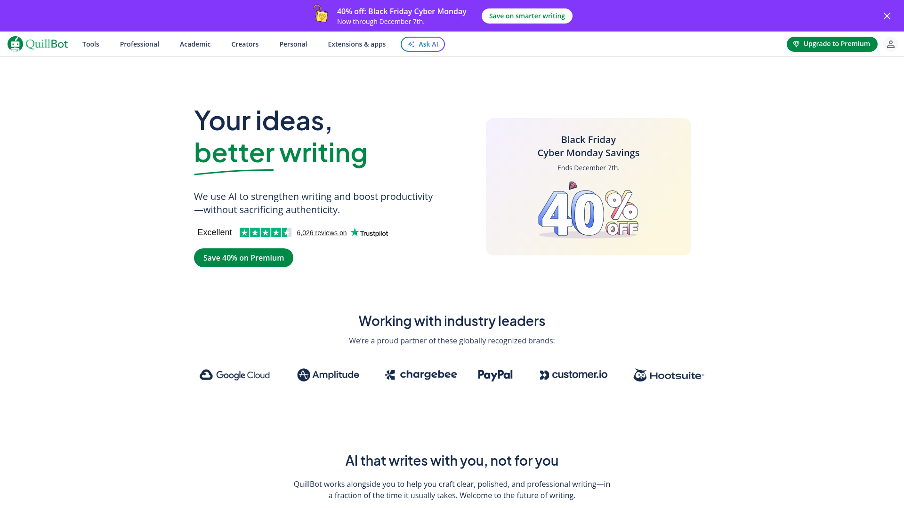

Try It Now
Overview
QuillBot is a powerful AI-driven paraphrasing and writing enhancement tool used by over 50 million students, professionals, and writers worldwide. Best known for its industry-leading paraphrasing capabilities, QuillBot helps users rewrite, edit, and improve their writing with advanced AI technology that goes far beyond simple synonym replacement.
What sets QuillBot apart is its sophisticated paraphrasing engine with 8 different modes, each tailored for specific writing needs. Whether you need to maintain formality, increase fluency, shorten text, or expand content, QuillBot's AI understands context and nuance to produce natural-sounding rewrites. The platform has evolved into a comprehensive writing suite including grammar checking, summarization, citation generation, and plagiarism detection.
Perfect for students working on essays, professionals refining reports, or content creators avoiding repetitive phrasing, QuillBot streamlines the writing process. Its Chrome extension integrates seamlessly with Google Docs, Gmail, and other platforms, making it accessible wherever you write. With both free and premium tiers, QuillBot offers exceptional value for anyone looking to improve their writing quality and efficiency.
Key Features
Paraphraser
Rewrite text in 8 different modes including Standard, Fluency, Formal, Creative, and more. Maintains meaning while improving clarity and style.
Grammar Checker
Catch grammar, spelling, and punctuation errors in real-time. Get suggestions for improving sentence structure and word choice.
Summarizer
Condense long articles, papers, or documents into key points. Extract the most important information quickly and efficiently.
Citation Generator
Create accurate citations in APA, MLA, Chicago, and other formats. Save time on bibliography creation for academic papers.
Plagiarism Checker
Scan your text against billions of sources to ensure originality. Get detailed reports on potential matches and citations needed.
Synonym Slider
Control how much QuillBot changes your text. Fine-tune the balance between original phrasing and paraphrased content.
Browser Extension
Use QuillBot directly in Gmail, Google Docs, LinkedIn, and more. Write and paraphrase without switching tabs or copying text.
Co-Writer
All-in-one writing space combining paraphrasing, research, and citation tools. Streamline your entire writing workflow in one place.
Pros & Cons
Advantages
- Excellent paraphrasing with 8 different modes
- Natural-sounding, context-aware rewrites
- Generous free tier with unlimited use
- Grammar checker included
- Summarizer saves reading time
- Citation generator for academic work
- Chrome extension for easy access
- Affordable premium pricing
- User-friendly interface
- No word limits on paraphrasing (free tier)
Disadvantages
- Free version limited to 125 words at a time
- Plagiarism checker requires Premium
- Some modes locked behind Premium
- Occasional unnatural phrasing
- Limited to English language
- Grammar checker less comprehensive than Grammarly
- Summarizer quality varies by source
- No mobile app
Pricing Plans
| Plan | Price | Word Limit | Key Features |
|---|---|---|---|
| Free | $0 | 125 words | Standard mode, 2 synonyms, grammar check, summarizer, 1200 words/summary |
| Premium | $9.95/month | Unlimited | All 8 modes, unlimited synonyms, plagiarism check, faster processing, tone insights |
Best Use Cases
QuillBot Excels At:
- Academic Writing: Paraphrase sources, avoid plagiarism, and generate citations for essays and research papers
- Content Rewriting: Repurpose existing content into fresh variations for different audiences
- Email Refinement: Polish professional emails and improve clarity and tone
- SEO Content: Create unique variations of content to avoid duplicate content penalties
- Language Learning: See different ways to express the same idea in English
- Document Summarization: Quickly extract key points from long articles or reports
- Professional Writing: Refine reports, proposals, and business documents
- Research Papers: Properly cite sources and ensure original wording
May Not Be Ideal For:
- Creative writing requiring unique voice
- Languages other than English
- Heavy grammar checking (use Grammarly instead)
- Long-form content generation from scratch
How It Compares
QuillBot vs Grammarly
QuillBot excels at paraphrasing and rewriting, while Grammarly focuses on grammar, tone, and clarity. Grammarly has better grammar checking and broader platform integration. QuillBot's free tier is more generous for paraphrasing. Many users benefit from using both tools together for comprehensive writing assistance.
QuillBot vs Wordtune
Both offer excellent rewriting capabilities. Wordtune provides more real-time sentence alternatives and better tone adjustments. QuillBot has more paraphrasing modes and includes additional tools like summarizer and citation generator. QuillBot is more affordable, while Wordtune offers more polished rewrites.
Screenshots & Interface
Explore Quillbot's interface:

Final Verdict
Our Recommendation
QuillBot is the best paraphrasing tool available and an excellent value for students, professionals, and content creators. Its sophisticated AI produces natural-sounding rewrites that maintain meaning while improving clarity and style. The generous free tier allows unlimited paraphrasing (125 words at a time), making it accessible to everyone. Premium at $9.95/month is remarkably affordable and unlocks unlimited word counts, all 8 paraphrasing modes, and plagiarism checking - essential for academic and professional writing. While it's not as comprehensive as Grammarly for grammar checking, QuillBot's paraphrasing capabilities are unmatched. The summarizer and citation generator add significant value, making QuillBot a complete writing toolkit. For students working on essays, professionals refining documents, or content creators needing fresh variations, QuillBot Premium is one of the best investments you can make in your writing. The free version alone provides tremendous value, but Premium is worth every penny for serious writers.